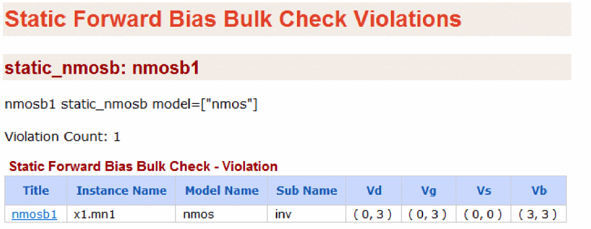

Static NMOS/PMOS Forward Bias Bulk Check (static_nmosb/static_pmosb)
Spectre Syntax
title static_nmosb model=[m1 m2 ...] mode=[definite|possible] vt=<value> vnth=<value> vpth=<value> <inst=[inst1 inst2...]> <xinst=[xinst1 xinst2...]> <subckt=[subckt1 subckt2....]> <xsubckt=[xsubckt1 xsubckt2....]> pwl_time=<value> <depth=n> <rpt_node=no|all|top|selected> error_limit=<value>
title static_pmosb model=[m1 m2 ...] mode=[definite|possible] vt=<value> vnth=<value> vpth=<value> <inst=[inst1 inst2...]> <xinst=[xinst1 xinst2...]> <subckt=[subckt1 subckt2....]> <xsubckt=[xsubckt1 xsubckt2....]> pwl_time=<value> <depth=n> <rpt_node=no|all|top|selected> error_limit=<value>
SPICE Syntax
.cck title static_nmosb model=[m1 m2 ...] mode=[definite|possible] vt=<value> vnth=<value> vpth=<value> <inst=[inst1 inst2...]> <xinst=[xinst1 xinst2...]> <subckt=[subckt1 subckt2....]> <xsubckt=[xsubckt1 xsubckt2....]> pwl_time=<value> <depth=n> <rpt_node=no|all|top|selected> error_limit=<value>
.cck title static_pmosb model=[m1 m2 ...] mode=[definite|possible] vt=<value> vnth=<value> vpth=<value> <inst=[inst1 inst2...]> <xinst=[xinst1 xinst2...]> <subckt=[subckt1 subckt2....]> <xsubckt=[xsubckt1 xsubckt2....]> pwl_time=<value> <depth=n> <rpt_node=no|all|top|selected> error_limit=<value>
Description
Reports MOSFET devices with forward biased bulk condition. The results are written to a file with the extension static.xml, which can be viewed with a Web browser. A violation is generated when the bulk bias voltage meets the following conditions:
-
When
mode=definite:min( Vb ) >= min( Vd, Vs ) + abs( vt ) -
When
mode=possible:max( Vb ) >= min( Vd, Vs ) + abs( vt )
-
When
mode=definite:max( Vb ) <= max( Vd, Vs ) - abs( vt ) -
When
mode=possible:min( Vb ) <= max( Vd, Vs ) - abs( vt )
Arguments
Example
nmosb1 static_nmosb model=["nmos"]
.cck nmosb1 static_nmosb model=["nmos"]
The above command will report all instances of the nmos model with potential forward bias bulk conditions. The following is an example of the report that is displayed in the Web browser:

Related Topics
Return to top